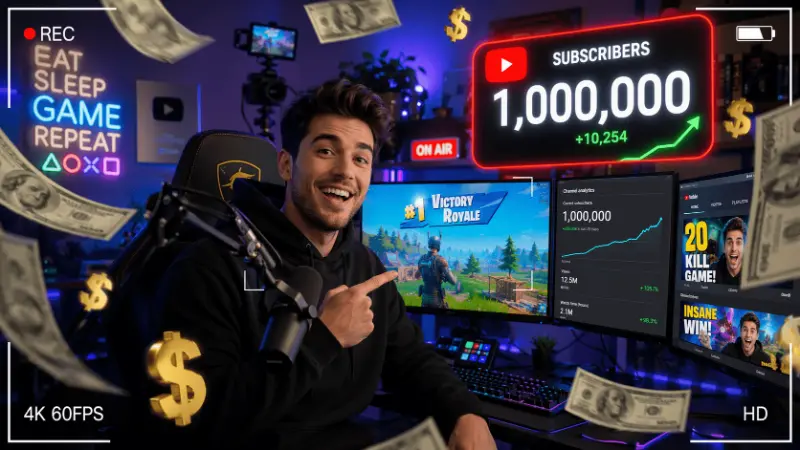

Cómo ser creador de contenido de Roblox o Free Fire en 2026 y ganar dinero real

Ser creador de contenido de gaming no es fácil. Eso es lo primero que necesitas escuchar, porque hay demasiadas guías que pintan el proceso como un atajo rápido hacia el éxito. La realidad es que crear contenido de Roblox o Free Fire en español en 2026 es un proyecto a largo plazo que requiere constancia, aprendizaje continuo y las decisiones correctas desde el principio. Pero también es posible, más accesible que nunca, y con el ecosistema de monetización más rico que el gaming mobile hispanohablante ha tenido. Esta guía te dice cómo hacerlo bien.
La realidad que nadie cuenta: qué esperar en el primer año
El canal de YouTube promedio de gaming en español tarda entre 12 y 18 meses en alcanzar los 1 000 suscriptores necesarios para monetización directa. La mayoría de creadores abandonan antes de los 6 meses porque esperan resultados más rápidos. Los que persisten más allá del año tienen, estadísticamente, una probabilidad mucho mayor de encontrar tracción real.
En TikTok el crecimiento puede ser más rápido gracias al algoritmo de distribución orgánica, pero la conversión de seguidores en ingresos estables es más difícil y requiere una estrategia diferente. En Twitch, el gaming móvil sigue siendo una categoría de nicho con audiencias pequeñas pero muy comprometidas.
Lo importante no es el canal que eliges al principio —es la consistencia con que publicas y la calidad que aportas. Un creador que sube un video de calidad media cada semana durante un año supera en crecimiento a uno que sube videos perfectos una vez al mes. La regularidad es el factor más determinante en los algoritmos de todas las plataformas en 2026.
YouTube vs. TikTok vs. Twitch: dónde empezar en 2026
Cada plataforma tiene una relación diferente con el contenido de Roblox y Free Fire. La decisión correcta depende de tu perfil, tus recursos técnicos y qué tipo de contenido disfrutas crear.
YouTube Largo plazo
YouTube sigue siendo la plataforma con mayor potencial de ingresos a largo plazo para creadores de gaming en español. Los videos informativos —guías, análisis de actualizaciones, rankings— tienen una vida útil de meses o años y siguen acumulando visualizaciones mucho después de publicarse, algo que TikTok no ofrece.
En 2026, los formatos que mejor funcionan para Roblox y Free Fire en YouTube son los tutoriales paso a paso (alta intención de búsqueda), las reacciones a actualizaciones importantes (pico de tráfico cuando hay novedades) y los "ranking de todo" (alta retención). Los Shorts de YouTube también tienen un algoritmo favorable en 2026 para el gaming mobile.
Requisito de monetización directa: 1 000 suscriptores + 4 000 horas de reproducción o 10 millones de views en Shorts en los últimos 12 meses.
TikTok Crecimiento rápido
TikTok tiene el algoritmo más democrático del ecosistema: un video de una cuenta nueva puede llegar a 100 000 personas si el contenido engancha en los primeros 3 segundos. Esto lo convierte en la plataforma ideal para los primeros meses de un creador que quiere construir audiencia rápidamente.
El problema es la monetización directa: TikTok paga significativamente menos por visualización que YouTube, y las opciones para monetizar antes de 10 000 seguidores son limitadas. La estrategia correcta es usar TikTok como embudo hacia YouTube o hacia una comunidad de Discord donde sí puedes monetizar de otras formas.
Para Roblox: clips de glitches, momentos graciosos y tours de builds espectaculares funcionan muy bien. Para Free Fire: clips de jugadas imposibles, consejos de 30 segundos y reacciones a actualizaciones.
Twitch Comunidad directa
Twitch tiene la monetización más directa del ecosistema: las donaciones, suscripciones de canal y bits se pagan en tiempo real durante el stream. Pero la audiencia de Free Fire y Roblox en Twitch es pequeña comparada con YouTube y TikTok, y la competencia de creadores grandes es más dura en este formato.
La ventaja única de Twitch es la conexión con la audiencia: los streams en directo generan una relación de comunidad que YouTube y TikTok no pueden replicar. Para creadores que disfrutan la interacción en tiempo real y tienen la constancia para streamear al menos 3 veces por semana, Twitch puede ser una fuente de ingresos antes de alcanzar grandes números de seguidores gracias a los suscriptores de pago.
Programas oficiales para creadores: Roblox y Free Fire
Ambos ecosistemas tienen programas formales para creadores que, una vez que accedes a ellos, proporcionan recursos exclusivos, ingresos adicionales y visibilidad que un creador independiente no puede conseguir por su cuenta.
Equipo básico necesario: qué comprar primero con presupuesto limitado
El mito de que necesitas un setup de mil dólares para empezar en contenido gaming ha muerto en 2026. El smartphone que usas para jugar Free Fire es suficiente para grabar y editar tu contenido durante los primeros 12 meses. La inversión en equipo debe escalar con los ingresos, no anticiparlos.
Tu smartphone actual (para móvil)
Si juegas Free Fire fluidamente en tu teléfono, puedes grabar con él. La mayoría de smartphones de 2022 en adelante tiene cámaras que producen video 1080p suficiente para YouTube. Usa la grabación de pantalla nativa del sistema (sin apps de terceros) para el gameplay — la calidad es mejor y no consume recursos adicionales.
💰 Inversión adicional: $0Micrófono de lavalier (solapa) básico
El audio es el elemento que más impacta en la percepción de calidad de un video. Un video con buena imagen pero audio malo se abandona en los primeros 10 segundos. Un lavalier básico de $8–15 USD conectado al jack del teléfono produce audio notablemente mejor que el micrófono integrado, especialmente para voiceover y comentarios durante el gameplay.
💰 Inversión: $8–20 USDAplicación de edición móvil gratuita
CapCut (gratuito, disponible en Android/iOS) es la aplicación de edición de video más usada por creadores de gaming mobile en español en 2026. Permite cortar clips, añadir subtítulos automáticos, insertar música libre de derechos, crear transiciones y exportar en 1080p sin marcas de agua en su versión gratuita. Es suficiente para los primeros 12–18 meses de contenido.
💰 Inversión: $0 (versión gratuita)Iluminación básica (opcional pero recomendado)
Si apareces en cámara en tus videos —facecam durante el gameplay o tutoriales grabados— una luz de anillo pequeña de 10 pulgadas mejora drásticamente la calidad visual percibida. Los modelos básicos cuestan entre $12 y $25 USD y se conectan por USB. No es una inversión obligatoria al principio, pero sí cuando empieces a crecer.
💰 Inversión: $12–25 USDCómo monetizar antes de tener millones de seguidores
La monetización directa de plataformas (AdSense de YouTube, programa de creadores de TikTok) requiere números significativos para generar ingresos relevantes. Pero hay formas de monetizar desde una audiencia pequeña que muchos creadores no conocen o no usan.
| Método | Requisito mínimo | Ingreso potencial | Dificultad |
|---|---|---|---|
| AdSense YouTube | 1 000 subs + 4 000h vistas | $1–5 CPM (variable) | Media |
| Afiliados de productos gaming | 100+ seguidores activos | $5–50 por venta referida | Baja |
| Torneos patrocinados locales | Reputación en comunidad | $20–200 por evento | Media |
| Venta de servicios (coaching) | Ser reconociblemente bueno | $5–30 por sesión | Baja |
| Programa Free Fire Creator | ~5 000 seguidores activos | Diamantes + visibilidad | Media |
| Roblox Video Stars | ~10 000 seguidores | Items exclusivos + pagos | Alta |
| Contenido patrocinado directo | Engagement alto (>5%) | $50–500 por post | Alta |
El método más accesible para empezar a generar ingresos antes de tener grandes números es el coaching o entrenamiento personal. Si eres jugador de Diamante o Heroico en Free Fire, o si tienes habilidades avanzadas en Roblox Studio, hay jugadores dispuestos a pagar pequeñas cantidades por una sesión de entrenamiento individual. Con solo 5 sesiones mensuales de $10 USD cada una ya tienes un ingreso de $50 USD mientras construyes tu audiencia.
El camino más largo es el único que llega al destino
Los creadores de contenido de gaming que tienen éxito sostenido en 2026 tienen algo en común: todos tardaron más de un año en ver ingresos significativos, todos publicaron contenido que casi nadie vio al principio, y todos siguieron haciéndolo de todas formas. No porque fueran ilusamente optimistas, sino porque habían tomado la decisión consciente de que el proceso tenía valor independientemente del resultado.
Si disfrutas jugar Roblox o Free Fire, si tienes algo genuino que compartir sobre esos juegos, y si estás dispuesto a ser consistente durante 12 meses antes de evaluar resultados, tienes lo que necesitas para empezar. El resto —el equipo, las plataformas, la monetización— se aprende en el camino. El único ingrediente que no se puede enseñar es el compromiso de publicar la próxima semana, y la siguiente, y la siguiente.
- Elige una sola plataforma para empezar: YouTube si tienes tiempo para videos largos, TikTok si solo tienes 30 minutos al día.
- Define tu nicho exacto: "guías de Roblox Studio para principiantes en español" es un nicho. "Gaming en general" no lo es.
- Graba y publica tus primeros 3 videos con el smartphone que ya tienes, sin esperar a comprar equipo.
- Instala CapCut y aprende a usar las funciones básicas: cortar, añadir texto y exportar en 1080p.
- Compra un lavalier de $10 antes que cualquier otra cosa: el audio importa más que la imagen.
- Únete a 2–3 comunidades de Discord de tu nicho y participa activamente antes de autopromoverte.
- Establece un compromiso de publicación semanal mínima y cúmplelo durante 3 meses sin evaluar los resultados.